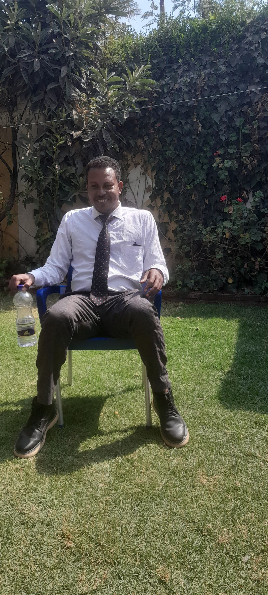
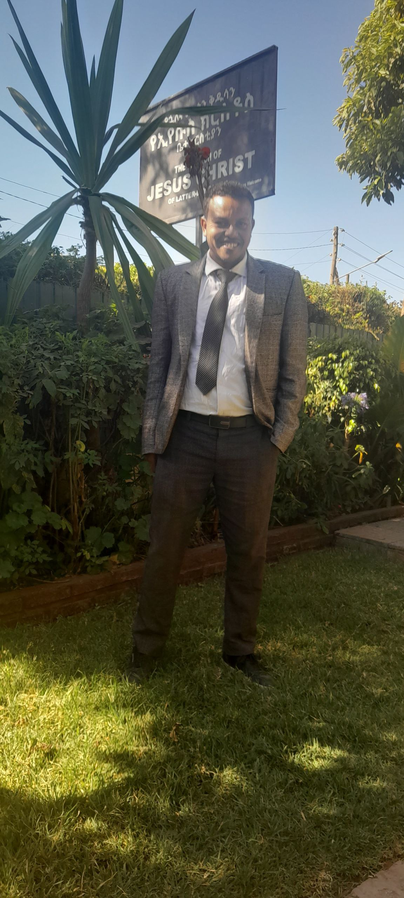

Zelalem Eshetu
About Me
My name is Zelalem Eshetu from Addis Ababa, Ethiopia. I have a background in teaching and management with a degree in Pure Mathematics and a master’s in Project Planning and Management. I’m currently studying Software Development at BYU-Idaho. I enjoy learning, helping others, and worshipping through songs. I speak Oromiffa, Amharic, and English fluently.
My Favorite Things
I enjoy worshipping through songs, reading books, and watching movies. My faith is very important to me, and I especially love music that inspires and uplifts me.